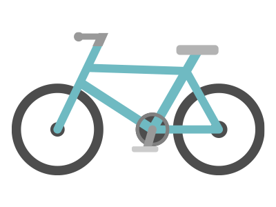
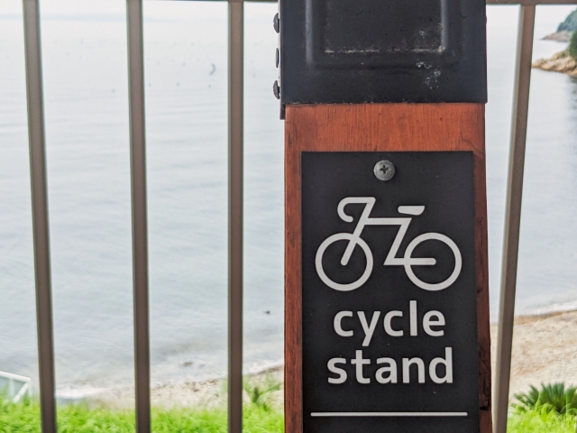
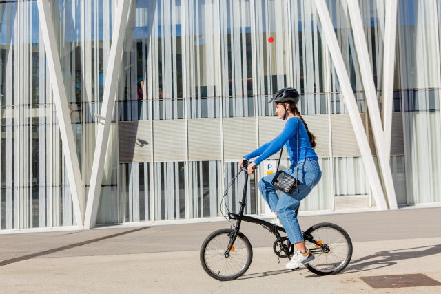
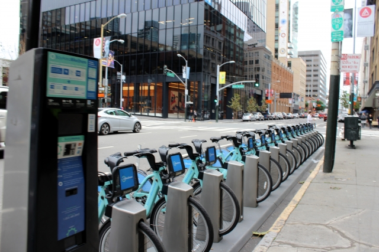

アプリをダウンロードし、登録後、地図から最寄りのサイクルステーションを探して自転車を予約します。予約後、自転車に表示されているQRコードをアプリでスキャンしてロックを解除します。利用後は、指定されたサイクルステーションに返却し、アプリで返却手続きを行ってください。

忙しい都市生活をもっと自由に。
新しい都市型シェアサイクルで、好きな時に、
好きな場所へ。
交通渋滞も気にせず、スマートに移動。
手軽に借りて、スムーズに返却。あなたの街をもっと身近に感じられる、新しい移動手段です。

サービスの特徴
GoodCyclingの魅力は、便利さと手軽さにあります。まず、低価格で利用でき、時間ごとの課金により、1分ごとの料金で決済されますので、無駄なく利用できます。
さらに、主要駅の徒歩1分圏内にサイクルステーションが設置されており、通勤やちょっとした移動に最適です。観光や日常のちょっとした移動まで、幅広いシーンで活用できるこのサービスは、都市での移動をよりスマートで快適にします。
利用方法
-
アプリをダウンロードし、アカウント登録
まずはアプリをダウンロードし、メールアドレスや電話番号でアカウントを登録します。 -
近くのサイクルステーションを検索
アプリの地図機能を使って、最寄りのサイクルステーションを探し、利用可能な自転車を確認します。 - QRコードをスキャンして自転車を解錠
指定された自転車のQRコードをアプリでスキャンし、ロックを解除して出発します。 - 返却ステーションで自転車を返却
目的地の返却ステーションに到着したら、自転車を停めてロックを施し、アプリで返却手続きを完了します。



決済方法
- 各種電子マネー
- クレジットカード
利用可能エリア
・東京２３区内
・大阪市内
各区内の主要駅や観光名所の近くにサイクルステーションを設置しています。 今後もステーション数、エリア拡大予定！ アプリからステーション設置候補地の提案も可能！
よくある質問
料金は利用時間に応じて計算されます。基本料金に加え、利用時間に応じた追加料金が発生します。詳細はアプリインストール後、料金表をご確認ください。
はい、借りた場所とは異なるサイクルステーションで返却可能です。ただし、返却可能なステーションはアプリで確認してください。
自転車の故障やトラブルが発生した場合、すぐにアプリ内のサポート機能を利用してご報告ください。最寄りのサイクルステーションで別の自転車に交換することも可能です。
シェアサイクルは24時間ご利用いただけます。夜間でも利用可能ですが、暗い場所での走行には十分ご注意ください。
ユーザーの声
1. Aさん 28歳、女性、会社員
「毎日の通勤でシェアサイクルを利用しています。駅からオフィスまでのちょっとした距離がいつも悩みだったのですが、シェアサイクルのおかげで時間を節約でき、運動にもなっています。自転車も清潔で、返却ステーションも多くて便利です。」
2. Bさん 35歳、男性、フリーランス
「打ち合わせのために移動することが多いので、シェアサイクルは本当に助かっています。渋滞も気にせず、気軽に街中を移動できるのが魅力ですね。環境にも優しいので、エコ意識が高い僕にピッタリです！」
3. Cさん 60歳、女性、主婦
「週末に夫と一緒に街を散策するのにシェアサイクルを使っています。車を使わずに運動もできて一石二鳥。操作も簡単で、年齢問わず使えるところが嬉しいです。特に電動アシスト自転車は坂道でも楽々でした。」
4 . Dさん 21歳、男性、大学生
「授業が終わってからアルバイトまでの移動にシェアサイクルを利用しています。電車よりも時間が読めるし、コストも安いので助かっています。アプリで簡単に予約できるし、キャンパスの周りにステーションがたくさんあるので便利です。」
5. Eさん 48歳、男性、会社役員
「出張先の移動でシェアサイクルを初めて使ってみましたが、とても快適でした。スマホで簡単に借りられて、現地の交通機関に依存しない自由な移動が可能なのがいいですね。今後も利用していきたいと思います。」
注意事項
信号や標識を守る
特に交差点や横断歩道では、必ず信号や標識に従いましょう。
歩行者優先
歩行者と同じ歩道を通る際は、歩行者を優先し、スピードを抑えてください。
一方通行に注意
シェアサイクル利用時も、車両としてのルールに従い、一方通行の道路に注意しましょう。
ヘルメットの着用
義務化されている場合もありますが、自発的にヘルメットを着用することで頭部のケガを防げます。
ライトと反射材の使用
夜間や視界が悪い場合は、前照灯や後部ライト、反射材を利用して自分の存在を他者に知らせましょう。
タイヤの空気圧
出発前にタイヤの空気圧を確認し、必要であれば調整してください。
ブレーキの効き具合
ブレーキが正常に作動するかどうかを確認し、安全性を確保しましょう。
ハンドルやサドルの調整
乗り心地に影響するため、自分の体に合った位置に調整してください。
過度なスピードを出さない
特に人通りの多い場所や視界が悪い場所では、スピードを控えましょう。
急ブレーキに注意
急なブレーキは転倒の原因になります。周囲の状況を見極め、余裕を持った運転を心掛けてください。
車両の死角に注意
自動車やトラックの死角に入らないように注意し、巻き込み事故を防ぎましょう。
左右の確認
曲がる際や道路を横断する際は、必ず左右を確認し、他の車両がいないか確かめましょう。
駐輪禁止エリアの確認
駐輪は、施設や道路の指定された場所に行う必要があります。公共の場での無断駐輪は迷惑行為となるため注意が必要です。
自転車のロック
使用後は必ずロックをかけ、盗難を防ぎましょう。
警察への連絡
事故に遭遇した場合、速やかに警察に連絡し、事故の状況を報告してください。
運営会社への連絡
事故の詳細を運営会社に報告し、指示に従って対応を行いましょう。
相手方の確認
事故の相手がいる場合は、連絡先を交換し、保険の手続きを行う準備をしてください。
賠償責任保険
シェアサイクルの利用者は、万が一の事故に備えて賠償責任保険に加入しておくことが推奨されます。